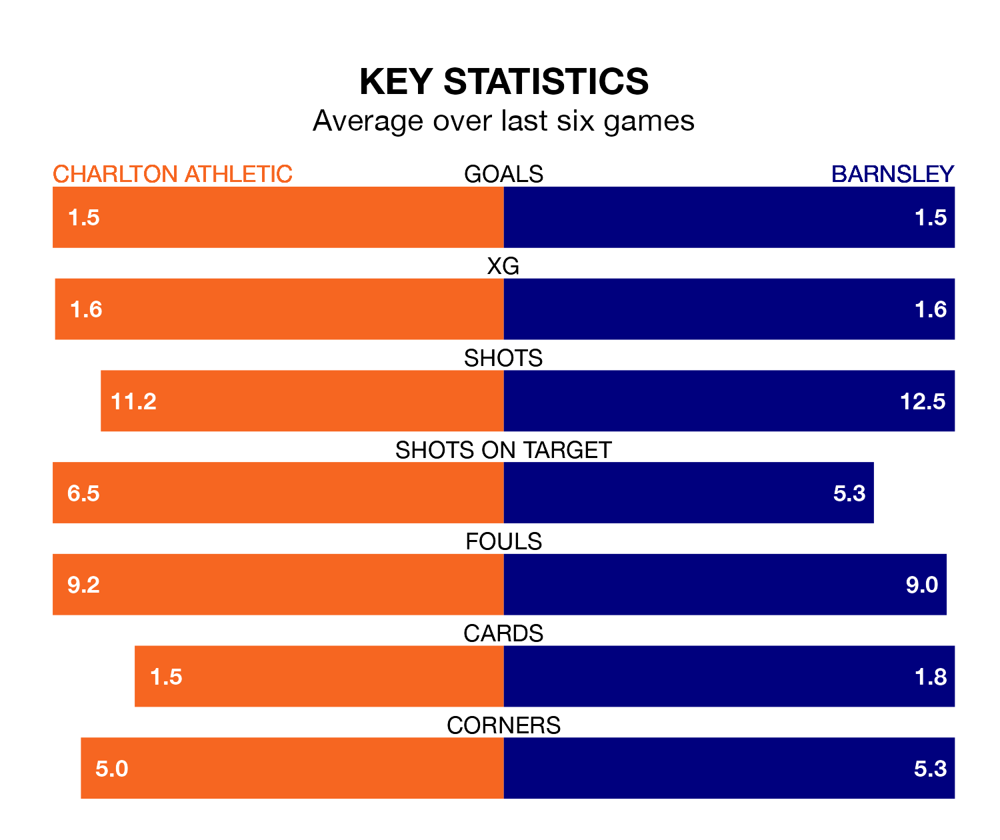

Charlton Athletic face Barnsley on Saturday seeking to protect their formidable unbeaten run in EFL League One.
The Addicks are unbeaten in 10, with three wins and seven draws, ahead of the 3pm kick-off.
They face a Barnsley team who have won five and drawn three over the same number of games.
With 73 goals in 40 games so far this season, Barnsley are the league's third-highest scorers with 1.8 goals per game. And they are conceding at an average rate, letting in 51 goals at a rate of 1.3 per game.
Charlton are also above average scorers, with 1.4 goals per game, compared to a league average of 1.3. They have also conceded 1.4 goals per game.
In Alfie May, Athletic have the league's most on-form striker so far this season. He has notched 21 goals in 38 appearances.
His goal rate of one every 151 minutes is quicker than that of Devante Cole, the Tykes's top scorer with a goal every 186 minutes, and a total of 17 goals in 40 games.
In the last 10 years, Charlton and Barnsley have played each other on eight occasions. They won three each, and they drew twice.
On average, the Addicks scored 1.5 goals and the Tykes 1.4 in those matches.
Their last meeting was on December 16, when they played out a 1-1 draw.
The away team are fifth in the table after 40 games, of which they have won 21 and drawn 11, earning 74 points.
The Addicks are 12 places behind Barnsley in 17th, with 10 wins and 17 draws putting them on 47 points.
Charlton's last match was on Monday, a 0-0 draw against Stevenage.
Barnsley beat Burton Albion 3-1 last time out, also on Monday, with John Mcatee (two) and Luca Connell on the scoresheet.
Updated: 16:41 (UTC), 04/04/24